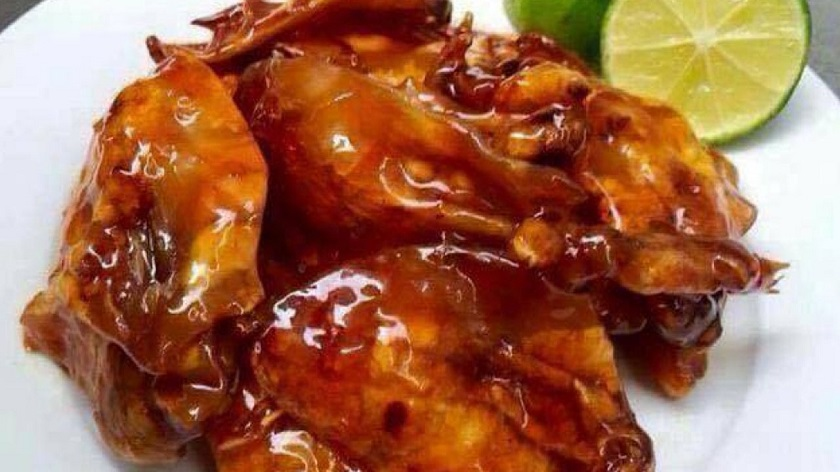

15 MÓN ĂN Ở QUY NHƠN DU KHÁCH NHẤT ĐỊNH PHẢI THỬ
> 
Các món ăn ngon ở Quy Nhơn mang đậm chất miền Trung, góp phần tạo nên một
nét đẹp văn hóa riêng cho nơi đây. Chắc hẳn các bạn đã nghe thấy những cái tên như: bánh tét, chả cá, bánh ít,...ở nhiều
nơi, nhưng hãy thử trải nghiệm và thưởng thức các món ăn này tại Quy Nhơn xem có điều gì khác biệt.
Đây là một trong những món ăn ngon ở Quy Nhơn để lại nhiều ấn tượng cho du khách nhất. Các bạn có
thể chọn chả cá hấp hoặc chiên đều ngon. Nếu chả cá chiên thì sẽ thơm hơn, chả cá hấp dành cho các bạn muốn ăn “healthy”.
Tuy nhiên, mỗi cách chế biến lại có cái ngon riêng của nó. Chả cá luôn tươi, mềm kết hợp một số gia vị đặc trưng của vùng
miền, rõ nhất đó là tiêu hạt. Người dân ở đây chia sẻ rằng chả cá nếu giã bằng tay sẽ dền và ngon hơn, tất nhiên công sức
của người làm ra cũng tâm huyết hơn.
Nếu đến Đà Nẵng hay Phú Quốc chúng ta cũng dễ dàng bắt gặp các hàng quán chào mời mua mực rim về
làm quà. Tuy nhiên, các bạn hãy cứ thử hương vị của món ăn này tại Quy Nhơn xem có gì khác biệt. Vị dai dai, cay cay, mùi
của mực quyện vào mùi cay của ớt, tiêu, tỏi. Từng miếng mực khi nhai sẽ có vị khác nhau. Đầu tiên là vị cay của ớt, nhai
càng lâu sẽ có vị ngọt của mực, thêm một chút chua của chanh ăn kèm thì ngon khó cưỡng.
Không phải ở đâu cũng có thể tìm được món bánh này vì nguyên liệu đặc trưng của nó. Bánh ít lá gai
được làm từ gạo nếp quê, nhân đậu xanh thơm thơm, bùi bùi và không thể thiếu lá gai. Lá gai say giã mịn, lọc lấy nước rồi
trộn với các nguyên liệu khác, thêm cùng với dừa tươi nạo nhỏ, một chút hạt vừng và mè đen. Nguyên liệu tuy đơn giản nhưng
tạo nên món bánh mang đậm bản sắc vùng miền của Quy Nhơn. Giá loại bánh này cũng khá rẻ, chỉ từ 30.000đ - 40.000đ/10 chiếc.
Theo kinh nghiệm du lịch Quy Nhơn thì món mắm nhum được rất nhiều người ưa chuộng. Mắm nhum được làm
từ nhum tẩm ướp với muối nguyên hạt, tiêu nguyên hạt và tỏi, sau đó để trong chum phơi ngoài nắng hoặc vùi trong bếp tro từ
10 - 15 ngày là đã có thể ăn được.
Nhum có nhiều loại, nghe người dân ở đây truyền đạt lại thì loại nhum được dùng làm món mắm này phải là Nhum ta. Khó có thể
tìm mua được mắm này vì nguyên liệu làm rất tốn kém và hiếm. Địa chỉ mua mắm Nhum ngon đó là Xã Mỹ An, Huyện Phù Mỹ, Bình Định
. Giá mắm nhum Mỹ An giao động từ 80.000đ – 120.000đ/hũ (tùy loại).